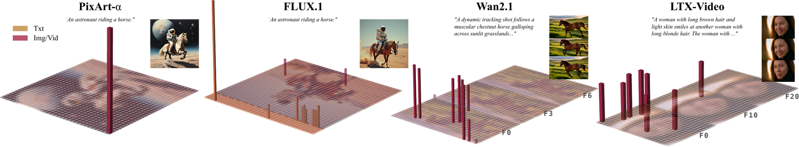
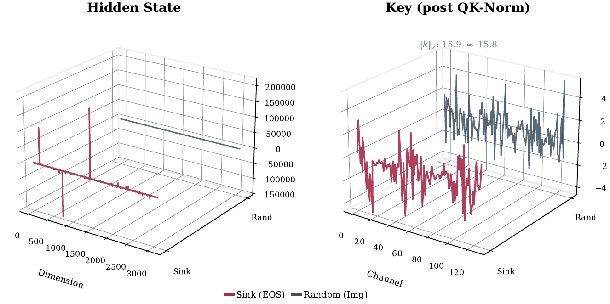
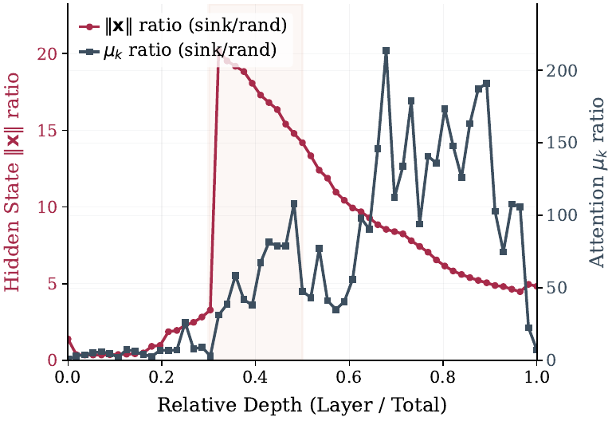
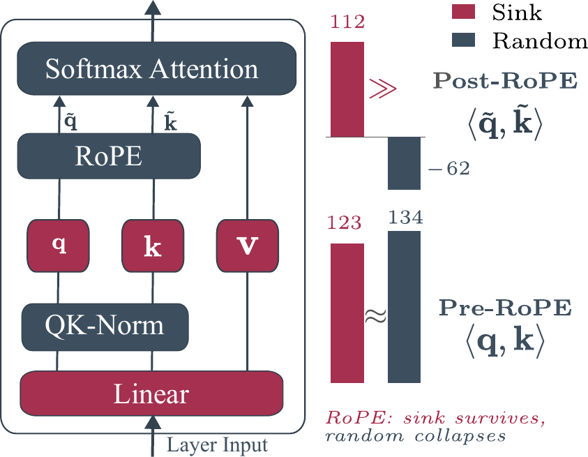
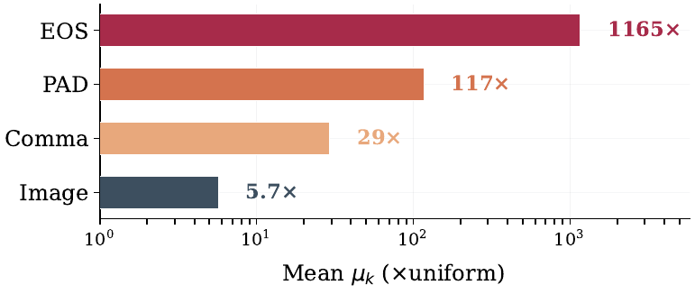

Key Findings
When and where do sinks emerge?
We track sink strength along two axes: denoising progress and network depth. All three representative models develop sinks within the first few steps. FLUX.1 shows high Key Importance from step 1; PixArt locks onto a fixed sink around step 6; Wan grows exponentially over the first 20 steps.
Across layers, a sharp transition occurs in the second half of the network: attention concentrates onto a few tokens, reaching 85× (PixArt), 214× (FLUX.1), and 477× (Wan) at peak. Shallow layers show uniform attention.

Which tokens become sinks?
The sink identity is determined by the positional encoding type. In AbsPE models (PixArt-α), sinks are corner tokens whose learned embedding has extreme coordinate values. In 2D RoPE models (FLUX.1, Z-Image, Qwen-Image), sinks land on text <PAD> tokens. In 3D RoPE video models (Wan2.1, LTX Video), sinks cluster on first-frame patches.
Across all PE types, sink tokens share two properties: they occupy stable positions (present in every forward pass) and carry minimal content (not directly supervised by the training loss).

Can massive activations explain sinks?
In LLMs, attention sinks co-occur with massive activations — outlier hidden-state dimensions that appear in the same tokens. We observe the same co-occurrence in DiTs: sink tokens exhibit activation spikes ~50× above average.
However, DiTs typically apply QK-Normalization, which projects all Key vectors to the same ℓ2-norm. After normalization, sink and non-sink tokens have identical Key magnitudes. The cause must lie in the direction of the Key vectors rather than their magnitude.


How does RoPE create sinks?
RoPE is the only operation between QK-Normalization and the dot product. We compute the mean ⟨q, k⟩ for a sink key versus a random image key, before and after RoPE:
Pre-RoPE: both keys score similarly (123 vs 134) — no sink would form. Post-RoPE: the sink key retains its score (112) while the random key drops to −62. RoPE does not boost the sink; it suppresses non-sink keys by rotating their channels in ways that reduce dot products with distant queries.

What is Frequency-Aware Concentration?
RoPE assigns each channel pair a rotation frequency θc. High-frequency channels rotate rapidly and their contributions cancel out for distant tokens. Low-frequency channels barely rotate: cos(Δθc) ≈ 1 regardless of distance — a "Safe Harbor".
Sink keys concentrate the majority of their energy into these low-frequency channels, while normal keys spread energy uniformly and lose it to high-frequency cancellation. We call this Frequency-Aware Concentration (FAC). It deepens with layer depth, reaching >200× attention gap in the deepest layers. On the Value side, sink tokens carry near-zero magnitudes — they absorb attention without adding signal.


How does PE type determine sink selection?
FAC explains how a token wins attention, but which tokens acquire this advantage depends on the PE type:
RoPE models: semantically empty tokens (<PAD>, <EOS>) that carry no content become sinks. In FLUX.1, <EOS> receives 1165× uniform attention, <PAD> 117×, commas only 29×.
AbsPE models: the learned positional embedding itself controls sink identity. We verify this causally: zeroing the corner PE and copying it to 20 positions arranged in a smiley-face pattern redirects attention to those positions (8.6× higher μk).

PAD > comma > image" loading="lazy">